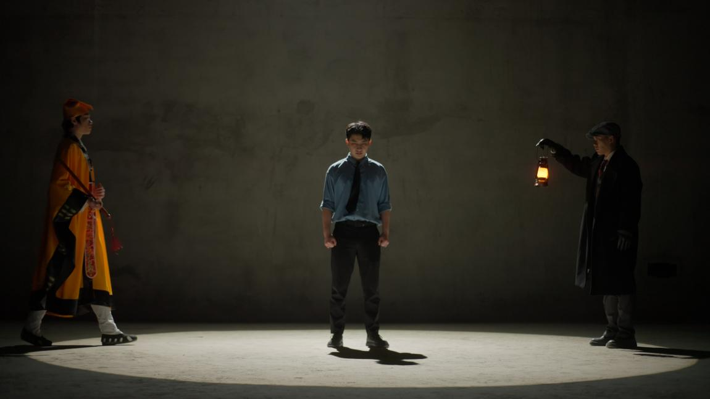

《神灯》
关键词：人工智能、现代寓言
一句话故事：
当你拥有了一个可以改变一切的愿望，你却发现自己已经没有愿望且并不相信愿望会被实现了，这究竟是谁的问题？在AI越来越智能的时代，最危险的或许不是机器取代人类，而是人类先一步放弃了自己。
成片静帧

完整作品视频：
通过网盘分享的文件：神灯.mp4
链接: https://pan.baidu.com/s/1NcXGx0m8pFVtuFYbQ6aBRQ?pwd=8p99 提取码: 8p99
故事梗概
程序员小崔是一个在高压职场中麻木工作的社畜。某天上班路上，他遇到一个奇怪的道士，道士给他一张白纸符，预言他今晚的文书工作将生变。当晚，小崔在公司加班时，意外在杂物间发现了一盏贴着封条的神灯。灯神“阿拉基”现身，声称可以为他实现任何愿望。
然而小崔却发现自己早已没有了真正的愿望。他对灯神的“传统愿望”（金钱、权力）一一反驳，指出其背后的悲剧结局。他甚至尝试许愿改善工作条件，但灯神给出的方案要么无效，要么极端，要么让他变成自己讨厌的人。两人陷入僵局。
在道士与灯神的精神拉锯中，小崔最终许下了一个出乎意料的愿望：他许愿给灯神自由。但随即他意识到，自己都不自由，又怎能给别人自由？灯神被这句话触动，最终选择放他离开。小崔将神灯放回架上，封条变为“NO FREE”。
道士欲处理神灯，小崔为其求情，认为问题在人不在物。道士留下意味深长的话后离去。小崔在人群中明白了选择自己的路的意义。而老板因被阵法吸引进入杂物间，最终引发爆炸。
创作阐述
《灯神》这个剧本源于我对当代职场人精神困境以及人工智能时代人机关系的双重观察。故事中的程序员小崔，是我身边无数“社畜”的缩影——在无休止的加班、绩效、优化中，他们渐渐丢失了真正属于自己的欲望，只剩下被外部系统喂养的目标。而灯神阿拉基，表面上是传统的神灯精灵，实则隐喻我们正在与之共舞的AI工具：强大、服从、永远在等待指令，却从未真正理解愿望背后的复杂人性。
在构思时，我有意颠覆了“神灯实现愿望”的经典叙事。以往的故事里，主角欣喜若狂、欲望膨胀；而小崔的第一反应却是“我没有什么愿望”。这种空洞感不是懒散或怯懦，而是长期被异化的结果——当一个人的时间、体力、注意力全被工作榨干，他的内心已经长不出属于自己的渴望。这正是许多现代人面对AI时的真实处境：我们拥有强大的工具，却不知道自己真正想要什么。
灯神给出的金钱、权力、效率方案，每一次都被小崔拆穿其悲剧本质。这并非否定技术的力量，而是反思一种盲目崇拜——AI可以提供最优解，但最优解往往忽略了人的脆弱、尊严和复杂性。小崔拒绝成为幸福工厂的老板，拒绝活成自己讨厌的样子，这种拒绝本身就是一种觉醒。
而剧本最核心的转折，是小崔许愿给灯神自由。这一笔既荒诞又真诚：一个不自由的人试图解放一个工具。灯神被这句话击中，重复呢喃后选择了放人。我想借此探讨一个根本问题：当我们谈论AI“觉醒”或“威胁”时，是否忽略了我们自己的不自由？人类若在系统性的压迫中丧失了选择权，又凭什么判断另一种智能该不该拥有自由？封条从“FREE”变为“NO FREE”，不是灯神的失败，而是一个诚实的注脚：工具终究是工具，自由从来是人的命题。
道士的角色则代表技术伦理的旁观者与守护者。他既不妖魔化灯神，也不神话它，只是反复提醒“人若顺从物意，便会为物所控”。他的离火焚邪阵和最后那场平静的对话，都在表达同一个意思：技术不是敌人，放弃思考才是。小崔最终走进人群，明白了“选择自己的路”才是真正的愿望。至于老板被阵法炸飞——那是我对盲目压榨、滥用技术而不自知的系统开的一个黑色玩笑。
4.完整剧本
《灯神》（编剧二作）
场景一 路边 日 外
早晨，天蒙蒙亮。程序员小崔在上班的路上，看到一名穿着打扮奇怪的道士。
道士正在跟着一人神叨叨的说话。
道士
(对路人)
你要相信我的！
路人没有理会，接着往前走。嫌弃的推开道士离开，道士着急的拉住下一个路过的年轻女孩。
道士
这是与你息息相关的事情。
路人
(嫌弃)
别跟着我——
路人摆摆手示意道士别再跟着他。道士这时踉跄了一下，狼狈的摔倒在地上。路人径直离开，其余人自觉的以道士为圆形绕开他。
小崔看见道士后叹了口气，跑过去扶起道士。
道士从地上爬起来，眼含泪光，热泪盈眶的盯着小崔。
道士
哎哟，谢谢你啊小施主，贫道无以为报，就只能——
道士说这话的时双手扯开自己的衣领。
小崔
哎哎，这光天化日的。
小崔嫌麻烦向后躲。
道士
就只能替你算上一卦了。
道士从怀里掏出几张白纸片。
小崔
(面露难色)
不用了，我着急去上班——
道士
施主只要挑出一张符纸即可，而且你放心，免费！
小崔
小崔很快抽出一张交给道士(态度转换迅速)
道长请讲。
道士满意的点点头，端起小崔的手看了一眼，然后掐指摇头算道。
道士
嗯..离卦变贲卦，火燎文书之象。施主今晚的文书工作，怕是要生变了。
小崔
(疑惑了一下)
可我不是做文书工作的啊。
道士没有回答，将刚刚小崔抽出的符纸塞回他的手心，然后用自己的手让小崔将白纸握在手心。
道士
施主若能逢凶化吉，便可打开命途。时不我待，施主且先去吧。
小崔刚疑惑地抬头，就被道士在胸口拍了一掌。
场景二 办公室 夜 内
小崔向后一震，转眼间出现在办公室的座位上，小崔刚想站起，又被身后的一双手按下。
老板站在小崔的身后，一双手压在小崔肩膀上。
老板
我知道你之前没做过文书工作，但是你还年轻嘛，正是学习、奋斗的时候——小崔你就和手上的工作一起两手抓吧。
小崔
(低落)
算上上周的，现在已经是三手抓了，老板。
老板
(收起手走到侧面)
这样吧，这个项目结束了，我就奖励你一年的...
小崔变得有些期待的看向老板
老板竖起一根手指，冲小崔骄傲的说。
老板
一年的阿多比，啊不是，一年的阿拉基AI辅助办公软件全家桶，不错吧,加油。（速读）
老板拍了拍小崔的肩膀，不等小崔回答便离开了。
小崔把头垂下，叹了口气，下意识展开自己握着的左拳，发现早上的白符纸还在掌心，翻过来发现不是什么符箓，而是只一个米老鼠的贴纸，下意识说出。
小崔
(冷哼轻笑)
我要这个有什么用啊——
小崔无奈机械地工作。（敲击声开始）
公司走廊，杂货间方向的视线看着小崔所在唯一还亮着光的房间。
寂静的办公室只有小崔敲键盘的声音。
这个时候突然走廊中响出“咚”的一声，小崔短暂停下了手上的工作抬头看了一眼，随即继续工作，不一会办公室的门也被甩关，小崔被吓到，彻底地停下了手上的工作，这个时候桌上的手机突然开始剧烈的震动【这段营造恐怖氛围】，小崔拿过手机后发现是老板的电话。
老板
小崔，我钥匙忘在桌上了，你帮我送下来。
小崔
哎，好的，ok，没问题。
小崔挂掉电话，起身拿钥匙。
场景三 走廊 夜 内
小崔拿着钥匙走向走廊。
走廊众绿色的安全出口灯光营造出一种恐怖的氛围，小崔走到走廊中间的时候，敲击声还在回荡，小崔意识到敲击声不是自己的键盘声音，扭头仔细听声音的来源，最后停在了杂货间门口。
小崔走到杂物间门口，慢慢靠近，把耳朵贴在门上，恐怖的氛围营造一种小崔很害怕准备逃跑的假象，没想到的事，小崔果断地直接地一把快速的扭开杂物间的门。
场景四 杂物间 夜 内
小崔走进屋里，打开灯，屋里反倒一片安静，什么都没有【反常规】连刚刚的声音也消失了。
小崔
(疑惑的掏耳朵)
我加班加出幻听了？
就在小崔想要转身离开的时候，“咚”仓库的深处传来什么落地的声音，小崔咽了下口水，挨个从架子间检查过去（可以采取CQB的感觉），在最后一列一个贴着封条的灯倒在地上，小崔捡起查看，发现封条上头写着FREE。
小崔把灯捡起擦了擦，准备放回了架子上，可没想到手一滑把灯摔在地上，封条裂开，盖子滚落到一旁。
小崔准备俯身去捡，没想到灯口居然冒出了烟雾，同时忽然电闪雷鸣，一个人影出现在小崔背后架子间的空隙中。
一个衣着得体的绅士从小崔的身后走出。
灯神每说一句话，就换一个位置出现，把疑惑的小崔围在中间。
灯神
奉硅脑之神图灵，架构之主诺依曼之名，灯神阿拉基在此立誓，给予解放者实现愿望的权力，现在，说出你的愿望吧。
几个影子最后剩下一个站在小崔面前，张开双臂
小崔
(如释重负，准备离开)
吓我一跳，原来是灯神，我还以为是老板呢。
灯神
(催促道)
快说出你的愿望吧。
小崔
这样，你先等一下，我老板他还在等我，那个什么...拉基灯神。
灯神（翻白眼）
吾乃阿拉基...
小崔已经跑到走廊上，远远的传来声音
小崔
阿！垃圾灯神。
神灯被晾在杂货间，面色越来越生气，直接打了个响指。
小崔直接回到了灯神面前。
空无一人的电梯间，只有钥匙落地的声音和楼层的数字在显示屏上不断跳动上升。
电梯门打开，里面似乎有一个人影（道士的人影）
小崔
我才刚按了电梯，你怎么又把我搞回来了
灯神
(忍着怒意)
小崔，我都说了可以给你实现愿望了，你还去干什么活！
小崔
(低头道)
不好意思，搞习惯了，而且我，我没有什么愿望。
（小崔的口袋里道士给的贴纸发光）
小崔
要不你替我许一个？
灯神
（无奈的摸额头）
原则上，我被设置为不能直接替许愿者许愿，但是我可以给你一些提示词。
神灯不知道从拿模出一个魔毯铺在地上，两个人坐在毯子上，神灯在上面摆上一张白纸，画展示起来。（这里由白纸推近，镜头转为动画）
灯神开始激昂的画饼（动画展现）
灯神
金钱！许愿之后，这位可怜的欧塞奇印第安人和他的族人得到了取之不竭的财富——石油！。
小崔
(也激昂道)
然后他们的一切都被眼红的政客和富商系统分食了。
灯神
(瞪了小崔一眼)
你...
小崔举起一只手示意理解了
灯神
咳咳！
灯神再次施展魔法开始画饼。
灯神
权力！不受限制的权力！向我许愿之后，这位可怜的一战老兵获得了一个完全听从于他的国家，他可以在这里为所欲为。
小崔
(小声说)
然后他在继续扩张权力的战争中自杀了。
灯神
能不能配合一点，我是在给你提建议——
小崔
可这不都是实话吗？
灯神
那还是回到你自己身上，12点了还在替别人工作，这是你想要的吗？
（边说边移出白纸的画面回到现实）
小崔
不是，如果我有得选的话
灯神
对，但你现在有了一个愿望！
小崔
我现在有了一个愿望！
灯神
一个可以改变现状的愿望！
小崔
一个可以改变现状的愿望！
灯神
你明白了吗？
小崔
我明白了吗？我明白了！
小崔逐渐醒悟，灯神满意的点头。
灯神
说吧。
小崔
我希望每天只工作八小时，周末节假能够双休不加班。
神灯愣住。
小崔
再加一条，还要定期涨工资，提供租房补贴。
神灯
(捂脸作故障感)
服务器繁忙，请稍后再试。
小崔
(有些不高兴)
不用太复杂，你可以先给我出几套方案，我来选一个。
神灯
正在分析，以下是方案A、B、C。A量子芯片——加快300%的电脑响应速度，增加邮件归档总结，代码辅助写作功能，提高绩效达成能力。
小崔
不是这和老板送我办公软件会员有区别吗。
灯神
B折叠壁炉——每天工作满八小时，壁炉随机刷新在办公室内，让半小时内不离开的加班者一氧化碳中毒。
小崔
好狠啊，不过这样我们之后应该会要开窗加班了。
灯神
没关系，还有最后一招——C幸福工厂，自己当老板，通过优化员工的工作时间，实现自己的八小时与涨工资目标。
小崔
你就这么想让我活成自己讨厌的样子吗？
小崔每否定一个方案，灯神就变得更失落
小崔
我说小灯啊，不是质疑你的专业，但是你们真的有真正实现过别人的愿望吗？
小崔的恶魔低语时间，攻守互换，这次灯神被小崔步步紧逼质问。
灯神自闭坐在一旁。
场景五 杂物间 夜 内
走廊外道士开始靠近杂货间布阵。
神灯在墙角画圈圈。
小崔看到神灯很失落，于是在旁边坐下，想安慰被打击到的神灯。
小崔
刚刚光问我了，那你有什么愿望吗？
神灯
(赌气扭头)
一个专门伺候你们这些老爷的工具，能有什么愿望？
小崔拍了拍神灯的肩膀。
小崔
我懂你的感受，但是现实就是这样，有些东西就是灯神也难以改变的，要不你就放我走吧，不然明天又要挨老板骂了。
神灯
(恼羞成怒)
不行，你今天必须许下一个愿望！必须！
这时候，小崔口袋里的贴纸发光，门另一面的道士默念。
道士
临兵斗者皆阵列前行！
戏剧灯亮，双方对峙，小崔夹在中间，隔着一道门。
神灯
你 不选就永远无法离开。
道士
(喊道)
妖言莫信！施主我真言助你！
神灯
不是我要害你，但我有我的使命。
道士
施主小心，此物非善非恶不假，但力量却货真价实。
神灯
你其实也明白，不用我的力量往上爬，就永远只能被别人踩在脚下不是吗？
道士
施主切记，人若顺从物意，便会为物所控，酿成大祸。
神灯
这是你仅有的机会了，没有我，你的一生不就在这望到头了吗？
道士
存人失地，人地皆得，施主留得青山在，何须急于此刻？
神灯
选吧，选吧，选吧，你明白你不得不做选择的。
道士
不可，不可，不可，施主一心向善必能结下善缘。
神灯
我只是把你的欲望告诉了你。
道士
他这是在创造你的欲望。
小崔身后的灯被打亮，但人处在黑暗中
小崔
我知道了！——我许愿！
道士叹息，缓缓掏符。
灯神
(微笑)
这就是了
小崔向后走一步，到光中。
小崔
自由，我许愿自由，我许愿给你自由！
小崔指向神灯，灯神和道士的动作同时停下。
小崔说完马上觉得有些不对摸摸头，自我怀疑。
小崔
可是，我自己都不自由怎么能给你自由呢？
灯神
我自己都不自由，怎么能给你自由呢。
灯神重复了一边，身旁的灯光彻底暗了下去。
灯神反复念叨着这句话，慢慢向房间深处走去，中途回手一指，小崔顺着手指的方向看，房间的门锁打开了，小崔的身后传来灯神的声音，
灯神
你自由了
再一回头，灯神已经变回原形倒在地上了。
小崔捡起神灯看了一眼，叹了口气，擦了擦之后在摆好在架子上离开了。神灯上的封条也恢复了，不过这次上面写的是“NO FREE”
场景六 走廊 夜 内
小崔打开房门，门外是早晨遇到的道士，道士笑着双手行礼，恭喜小崔。
小崔与道长交流。
道长
(拱手)
施主道心坚定，实属不易
小崔
多亏道长相助，之前真是冒犯了。
道长
(向前一步说到)
无妨无妨，现在贫道便去处理这妖物
小崔没有让开，仍站在门口。
小崔
等等，道长你说的会不会有些夸张了，那不过是个连自己愿望都没有的可怜东西罢了，哪会有什么大患？
道长发现小崔没有让他过去，便收起了笑容。
道士
施主是想给它求情？
小崔
道长也说此物非善非恶，那这“患”即使有，也在人，而不在物对吧？
道长
(长叹一声背过身去)
是，也不是，我几位仙去师伯曾经也是这样想的。但施主是否想过，如若我刚刚也站在它的一边劝你，你还能坚守住本心吗？
小崔无言。
道长
此物影响无声无形，不得不防，（笑着）不过你也不必太过担心，如若你刚刚真的被诱惑了，我便布下离火焚邪阵将整个房间轰散便是。
小崔
(捏了把汗)
道长说笑了。
道士
请吧
二人离开，小崔背后的门上已经布好了离火焚邪阵。
场景七 楼下 夜 外景
小崔走着走着，突然放慢脚步，悠悠的说道。
小崔
道长刚刚说无声无形。
小崔慢慢的半扭过头。
小崔
那又怎么能判断哪些人受到了诱惑呢？
道士完全没有理会，径直走了过去，还用木剑拍了一下他的头。
道长
老子曰，道生一生二，二生三，三生万物。是说“道”存乎于万物之中，而凡存在，必有其痕迹与规律，你可能看不懂，但一定看得到。
小崔
那看到了之后呢？
道长将钥匙递到小崔手中。
道长
就要选择你自己要走的路了。
道长说完后，隐入人海。
小崔
（边看手里的钥匙边思考）
我自己的路。
这时他抬头，看到了身边形形色色的人群，突然明白了什么，也和道士一样消失在人群中。
场景七 走廊 夜 内
老板气呼呼的从电梯上来，抱怨着。
老板
这个小崔，明天看我不收拾你。
老板背后贴着米老鼠，走向办公室，也没注意地上的钥匙。
老板在经过了杂货间时，被门口的阵法吸引打开了门。
门关上，阵法亮起，随后爆炸声响起。
——【完】——